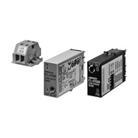
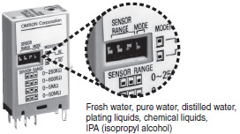
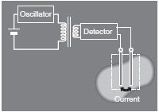
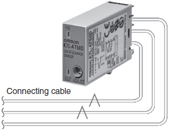
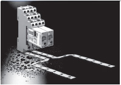
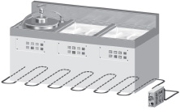
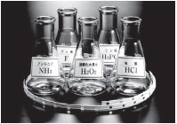
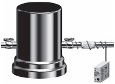
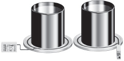
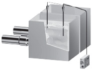

Sensing Bands boast high degree of chemical resistance. The K7L can be used in a wide range of applications, from semiconductor production installations to food-processing equipment.
Building Automation
Industrial Automation
Power Automation & Safety


Bangladesh Distributor
K7L-AT50[] / AT50D[]
Liquid Leakage Sensor Amplifier/Liquid Leakage Sensor Amplifier with Disconnection Detection Function

Reliable Detection of a Wide Variety of Liquids Ranging from Water to Liquid Chemicals with Low Conductivity. Four Sensing Ranges Available. K7L-AT50B and K7L-AT50DB are our Value Design products which increase the value of your control panels.
about this Product Family
Related Contents
- Sensors
- Liquid Leakage Sensors
- Features
- Lineup
- Specifications
- Dimensions
- Catalog
last update: April 01, 2016
Inter-electrode Resistance Detection
Stable detection of liquids with impedances of up to 50 MΩ and common water. Four sensing ranges are available, ensuring detection suited to the application.

AC Detection Method
The K7L internally oscillates AC signals provided to the Sensing Band, protecting the Sensing Band from electric corrosion and ensuring safe operation.

Noise Canceller Function (Patent Pending)
The K7L incorporates a noise canceller circuit that uses a 3-conductor cable, ensuring a high level of noise immunity.

Multi-channel Applications
Isolation between the power supply circuits and sensing circuits allows multiple channels to be installed in the same location.

Detection of Condensation and Liquid Leakage at Semiconductor Production Installations
Detection is also possible for condensation inside cleaning devices and liquid leaked to the surroundings.

Sensing Band with Excellent Chemical Resistance
SUS316 and polyethylene are used for the Sensing Band's core and sheath to ensure high resistance to both acidic and alkaline liquids.

Detection of Liquid Leakage at Pipe Joints for Liquid Chemical Tanks
Liquid leakage at a pipe joint can be detected by wrapping the Sensing Band around the joint.

Liquid Leakage Detection for Measuring Baths in CMP Devices
Liquid leaked to drain pans can be detected to prevent damage to devices and cleaning irregularities for wafers.

Detection of Cleaning Fluid Level for Plating Devices
The level of pure water is detected inside plating baths. High sensitivity allows high-accuracy control to prevent cleaning irregularities.

Note: Be sure to ground the baths if two or more K7L Sensors are used in the same tank in an explosion-prevention area.
last update: April 01, 2016